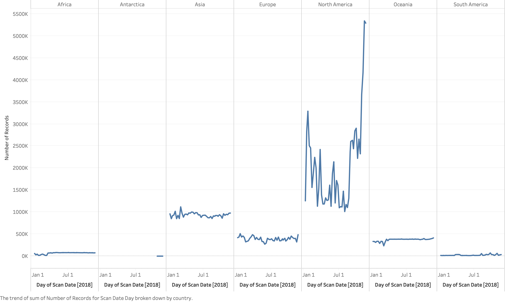
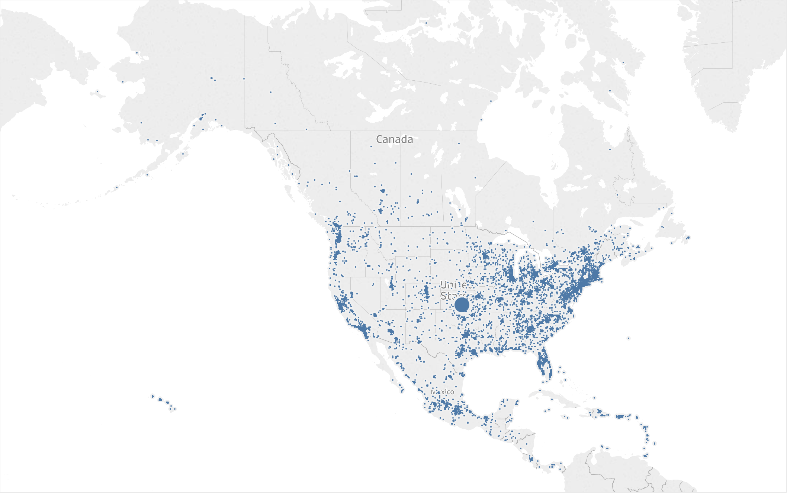
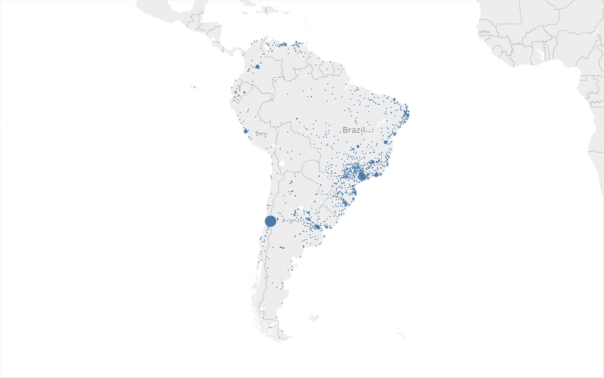
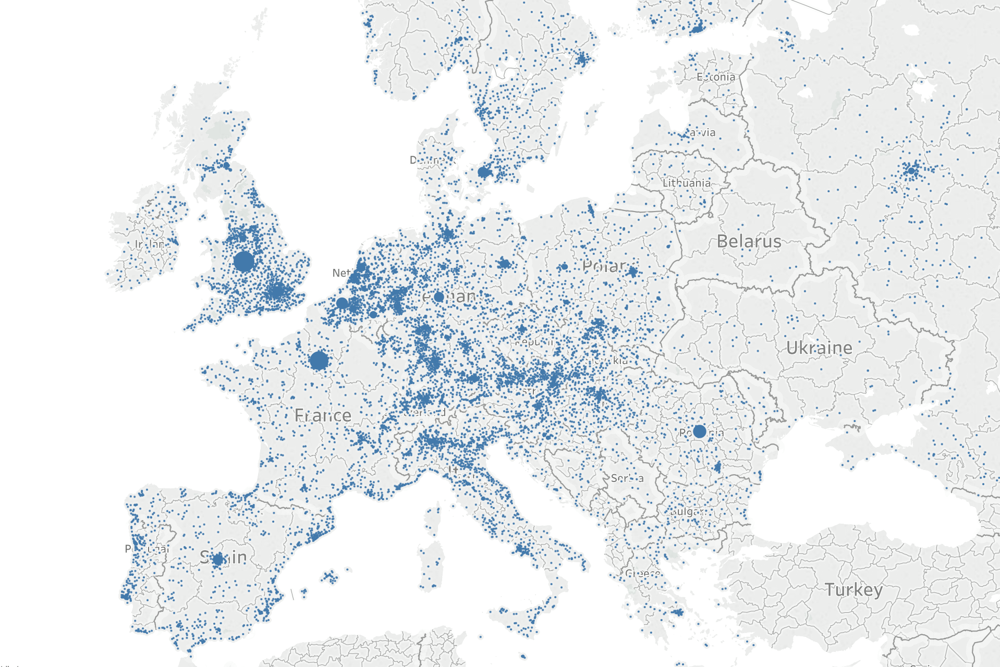
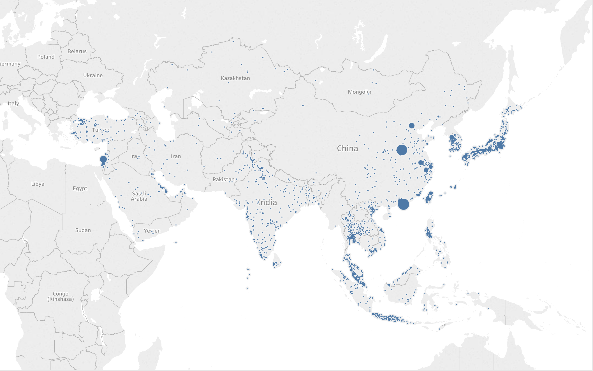
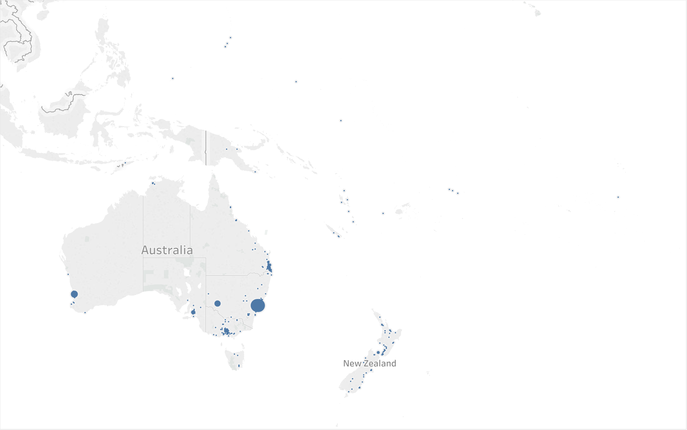

The Cryptocurrency network analyzer parses through open source network traffic data on various ports to visualize the traffic in a more digestible manner. This demonstration uses the open source data on IPv4-wide port scans available from Rapid7, an open data community that provides members access to data from Project Sonar which conducts internet-wide surveys to gain insights into global exposure to common vulnerabilities.
Analyzing bitcoin port scans.
Correlating IP addresses to location.
Correlating location with electricity costs.
Analyze geolocation data for bitcoin networks in relation to location specific metrics to reveal trends, and ultimately map popularity of bitcoin locations to characteristics such as profitability over time.
Overview: Bitcoin Usage Broken Down by Country for 2018
Bitcoin Nodes: North America
Bitcoin Nodes: South America
Bitcoin Nodes: Europe
Bitcoin Nodes: Asia
Bitcoin Nodes: Australia
A demonstration has been created that allows you to interactively scroll around the Earth to see locations of network traffic regarding bitcoin activity.This demo was made possible by Rapid7 for providing the open source data and cesium consortium for providing a library to visualize our analysis.The web application allows the user to visualize bitcoin network traffic through a time series. Currently it is limited to only bitcoin, but future iterations of this demo would include scans of other ports. Please enjoy the demo!
DemoThe creators of the demo for this project are Devleena Das, Jonathan Dolan, Joshua Henson, Albert Li, Samantha Mann, and Eric Rafalovsky. All are students at Georgia Tech. This project was developed for ECE 4605, which serves to underline advanced internetworking topics. This project emphasizes the topic of big data.